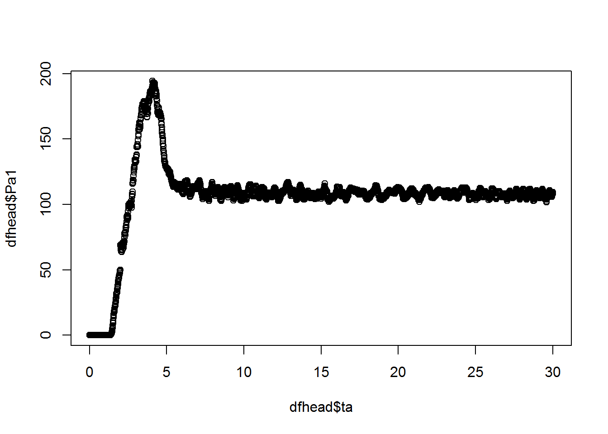
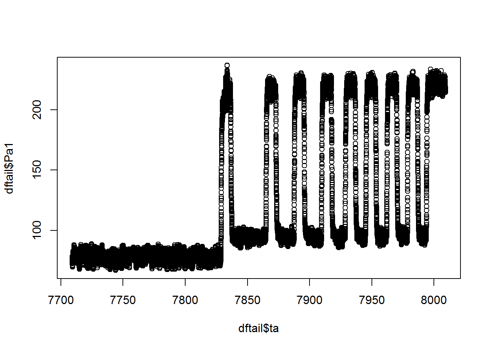

Om de tractiecapaciteit te meten worden de fiets eerst leeggereden op eChecker. De data van deze eChecker metingen kan dan in R verwerkt worden om tot één getal, de tractiecapaciteit, te komen. Dit document beschrijf de dataverwerking. Eerst worden de vergelijkingen van de calibratie op eChecker nog eens samengevat. De volgende sectie bespreekt de structuur en het inlezen van de csv bestanden. De laatste sectie beschrijft de effectieve verwerking van de data.
Er wordt op twee plaatsen mechanisch vermogen gemeten 1. Bij de pedaalaandrijving \(P_c\) en bij de wervestroomrem \(P_{FW}\). Er treden verliezen op tussen de banden en de rollen (\(P_{td}\)) en in de ketting en versnellingen \(P_d\). Dit laatste verlies kan ook worden uitgedrukt in de vorm van een rendement van ketting en versnellingen \(\eta_d\). De motor van de fiets levert een vermogen \(P_{motor}\) gemeten aan het wiel.
Bij een voorwielmotor kan het vermogensevenwicht dan als volgt uitgedrukt worden:
\[ \begin{aligned} P_{c}\eta_d + P_{motor} = P_{td} + P_{FW} \end{aligned} \]
De fiets wordt 5 minuten aangedreven zonder assistentie van de elektrische motor (situatie 1). Daarna wordt de fiets leeggereden met maximale assistentie van de motor en extra weerstand van de wervelstroomrem (situatie 2).
\[ \begin{aligned} P_{c,1}\eta_d &= P_{td,1} + P_{FW,1} \\ P_{c,2}\eta_d + P_{motor,2} &= P_{td,2} + P_{FW,2} \end{aligned} \]
Om dat de snelheid in situatie 1 en 2 dezelfde is wordt aangenomen dat de wrijving tussen banden en rollen ook hetzelfde is, dus \(P_{td,1} = P_{td,2}\). Het de twee bovenstaande vergelijkingen kan dan het motorvermogen afgeleid worden.
\[ \begin{aligned} P_{motor,2} &= (P_{c,1}\eta_d - P_{FW,1}) + (P_{FW,2} - P_{c,2}\eta_d) \end{aligned} \]
Voor een middenmotor wordt het motorvermogen op dezelfde plaats geleverd als dat van de pedaalaandrijving van de testbank:
\[ \begin{aligned} (P_{c} + P_{motor})\eta_d = P_{td} + P_{FW} \end{aligned} \]
Hier analoog aan kalibratie bij voorwielmotor situatie 1 zonder assistentie en situatie twee met maximale assistentie.
\[ \begin{aligned} P_{c,1}\eta_d &= P_{td,1} + P_{FW,1} \\ (P_{c,2} + P_{motor,2})\eta_d &= P_{td,2} + P_{FW,2} \end{aligned} \]
En zo het motorvermogen afleiden op basis van de aanname \(P_{td,1} = P_{td,2}\).
\[ \begin{aligned} P_{motor,2} = \frac{1}{\eta_d}(P_{c,1}\eta_d - P_{FW,1} + P_{FW,2}) - P_{c,2} \end{aligned} \]
Omdat we het rendement van de aandrijving \(\eta_d\) nog niet kunnen meten zijn voorgaande formules niet rechtreeks toepasbaar. Als we aannemen dan er geen verliezen optreden (een fout van enkele percenten) dan is de vergelijking voor zowel voorwiel- als middenmotor te vereenvoudigen tot éénzelfde vergelijking.
\[ \begin{aligned} P_{motor,2} = P_{c,1} - P_{FW,1} + P_{FW,2} - P_{c,2} \end{aligned} \]
Het grootste verschil tussen voor- en middenmotor voor de testbank is de grootte van \(P_{td}\) door aan- of afwezichtheid van de groene riem en een extra rollend wiel.
De map met Rcode heeft volgende indeling:
+-- data
| +-- fiets1kalvoor.csv
| +-- fiets1kalna.csv
| +-- fiets1part1.csv
| +-- ...
+-- Rdata
| +-- fiets1kalvoor.Rda
| +-- fiets1kalna.Rda
| +-- fiets1part1.Rda
| +-- ...
+-- doc
| +-- tutorial.Rmd
| +-- tutorial.html
+-- csvToRda.R
+-- fun.R
+-- main.RDe data map bevat csv bestanden met ruwe data. Er wordt bij elke test een kalibratie voor en na gedaan. Deze csvbestanden hebben de naam “fietsXkalvoor.csv” en “fietsXkalna.csv” met X het fietsnummer. De effectieve test kan in één of meerdere delen worden gedaan (als de motor oververhit raakt). Deze csv bestanden kragen de naam “fietsXpartY.csv” met Y het deelnummer.
De Rdatamap bevat the geconverteerde data voor snelle verwerking in R.
De doc map bevat documentatie (zoals dit document dat je nu leest). De documentatie is gemaakt met R markdown.
Het script csvToRda.R converteert de csv bestanden in de data map naar Rda bestanden in de Rdata map. Dit script moet worden uitgevoerd vóór main.R.
Het script fun.R bevat functies specifiek geschreven voor het verwerken van eChecker data. Deze worden ingeladen aan het begin van main.R.
Het script main.R door de effectieve verwerking van de data om tot de tractiecapaciteit te komen.
Ik ga ervan uit dat R en Rstudio beide geïnstalleerd zijn (zie google).
Open csvToRda.R in Rstudio. Na wat uitleg komt de eerste lijn code die de “working directory” goed zet. Zo kan de rest van het script gebruik maken van relatieve paden ten opzichte van deze map.
# Hier zet je de "working directory" van R studio naar de map die csvtoRda.R (dit bestand) bevat
setwd("C:/Users/jeroen.demaeyer/Google Drive/TGVelo/Studies/echecker/tutorial_tractiecapaciteit")Ook het script “fun.R” en de bibliotheek “data.table” worden ingeladen.
# In deze map zit ook R code met de functies die je gaat gebreuken, laad deze in
source("fun.R")
# laad de bibliotheek "data.table" die wordt gebruikt door de functie readcsv2 uit "fun.R"
library(data.table)Nu maken we een lijst met alle bestandsnamen van de csv bestanden in de data map.
# alle bestanden in de map data worden geconverteerd
# en automatisch opgeslagen onder eenzelfde naam in de map Rdata
datalist <- list.files("data", pattern = ".*.csv")
print(datalist) # lijst even tonen## [1] "fiets1kalna.csv" "fiets1kalvoor.csv" "fiets1part1.csv"
## [4] "fiets6kalna.csv" "fiets6kalvoor.csv" "fiets6part1.csv"
## [7] "fiets6part2.csv"Met een for lus wordt nu voor elk csv bestand een Rda bestand gemaakt en in de map Rdata opgeslagen.
for (file in datalist) {
name <- strsplit(file, "\\.")[[1]][1] # strip the .csv part from file name
df <- readcsv2(file, compressed = T, columns = c("ta", "v", "Pa1", "FW"))
dfname <- name
assign(dfname, df)
save(list = dfname, file = paste("Rdata/", name, ".Rda", sep=""))
}Alleen de kollomen (“ta”, “v”, “Pa1”, “FW”) worden opgeslagen in het Rda bestand, de andere data hebben we niet nodig voor tractiecapaciteit.
Hiervoor dient het script “main.R”. Ook aan het begin van dit script wordt de working directory goed gezet en “fun.R” ingeladen. De bibliotheek “data.table” hebben we niet meer nodig. (Geen csv bestanden meer inlezen.)
# setup ####
# Hier zet je de "working directory" van R studio naar de map die main.R (dit bestand) bevat
setwd("C:/Users/jeroen.demaeyer/Google Drive/TGVelo/Studies/echecker/tutorial_tractiecapaciteit")
# In deze map zit ook R code met de functies die je gaat gebreuken, laad deze in
source("fun.R")Volgens de testprocedure wordt de kalibratie zowel voor en na de test uitgevoerd. Het gemiddedlde van de twee wordt gebruikt als kalibratievermogen ($P_{td}).
# fiet 1 ####
## fiets 1 kalibratie ####
load("Rdata/fiets1kalvoor.Rda")
# gemiddelde van data in interval van 100 s tot 300 s
voor <- calibrate(fiets1kalvoor, tStart = 100, tStop = 300)
Pkalvoor <- voor$Pmean - voor$FW
load("Rdata/fiets1kalna.Rda")
# gemiddelde van data in interval van 100 s tot 300 s
na <- calibrate(fiets1kalna, tStart = 100, tStop = 300)
Pkalna <- na$Pmean - na$FW
Pkal <- (Pkalna + Pkalvoor) / 2
print(Pkal) # toon het kalibratievermogen## [1] 124.5454Voor de kalibratie wordt telkens het gemiddelde genomen over het interval tussen 100 s (1 min 20) en 300 s (5 min). Pkal komt hier overeen met \(P_{td} = P_{c,1}\eta_d - P_{FW,1}\) met \(\eta_d = 1\).
Nu gaan we in de data van het leegrijden zoeken wanneer de motor starte en stopte met ondersteunen.
load("Rdata/fiets1part1.Rda")
# verander naam in het kortere "p1"
p1 <- fiets1part1
remove(fiets1part1)
# part 1
dfhead <- head(p1, 3000)
plot(dfhead$ta, dfhead$Pa1) # 8
dftail <- tail(p1, 30000)
plot(dftail$ta, dftail$Pa1) # 7830
sel <- subset(p1, ta > 8 & ta < 7830)Het vermogen van de pedaalaandrijving (Pa1) wordt geplot in functie van de tijd. Als dit daalt betekend dit dat de motor vermogen levert. In de tweede figuur zien we dat de motor in schokken stopte met ondersteunen. We nemen de data tot de motor voor de eerste keer uitviel. De rest wordt niet in rekening gebracht voor tractiecapaciteit. Nu we in de variable sel de data van het leegrijden hebben kunnen we het motorvermogen berekenen. \(P_{td}\) wordt constant verondersteld over de hele rit.
\[ \begin{aligned} P_{motor,2} = P_{td} + P_{FW,2} - P_{c,2} \end{aligned} \]
Of in R code:
sel$Pmotor <- Pkal - sel$Pa1 + sel$FWDit kunnen we nu omrekenen naar energie, met de kennis dat ded sample tijd van het dataloggen 0.01 s is.
Etot <- sum(sel$Pmotor * c(0.01, diff(sel$ta)))
Ewh <- Etot / 3600 # Joule naar Wh
print(Ewh)## [1] 267.021Er wordt eigenlijk elektrisch vermogen gemeten aan de crank en verplaatsing en toerental bij de eddy-current rem.↩